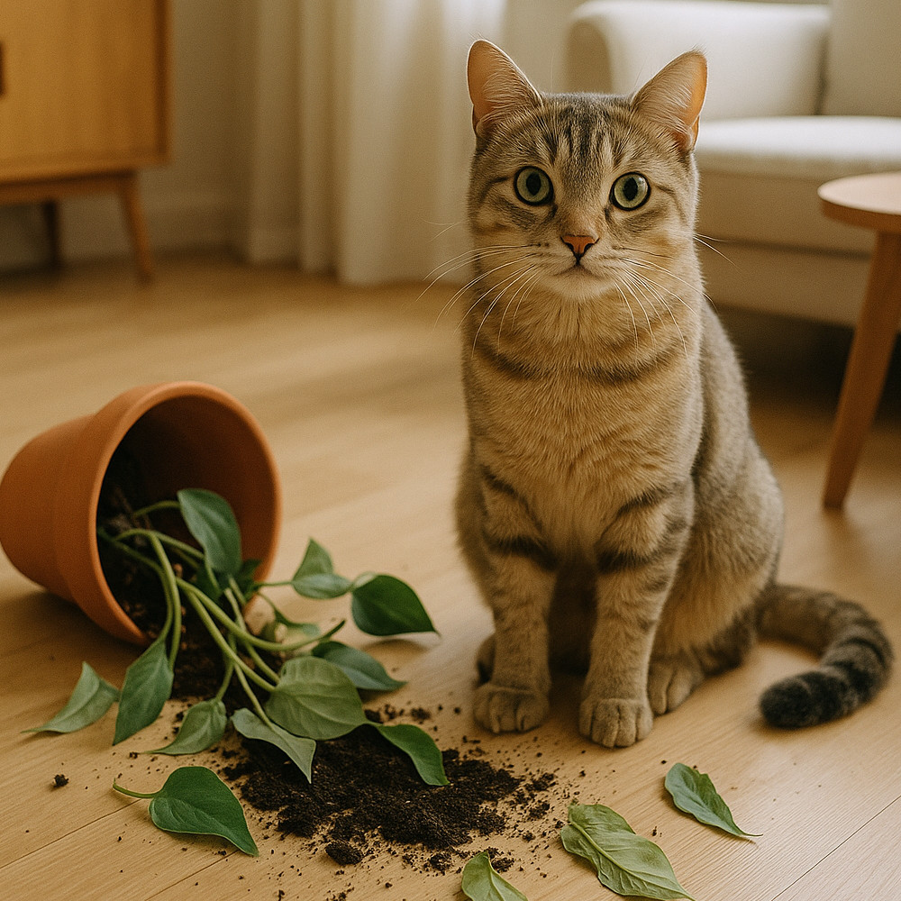

O que fazer quando o gato destrói suas plantas?
Você passou semanas cuidando daquela samambaia, escolheu com carinho o vaso novo, arrumou o cantinho da luz perfeita… e então, a cena que todo gateiro e amante de plantas já conhece: terra espalhada, folhas mastigadas e um gato com aquela cara de "não fui eu". Quem vive com plantas e felinos já viu esse filme.
Mas não se preocupe: é possível sim ter uma casa cheia de plantas e um gato feliz, desde que você entenda o comportamento felino e faça algumas adaptações no ambiente. Neste post, vamos te mostrar por que isso acontece e o que fazer para evitar que a cena se repita (ou piore).
Por que os gatos atacam as plantas?
Gatos são caçadores natos, curiosos e sensoriais. Eles exploram o ambiente com as patas, o focinho e, muitas vezes, a boca. Quando uma planta se move com o vento ou exala um cheiro diferente, ela se torna um verdadeiro brinquedo natural para eles.
- Tédio: gatos entediados criam suas próprias diversões. Plantas são alvos fáceis e interessantes.
- Busca por fibras: alguns mastigam folhas como forma de induzir vômito ou aliviar desconforto digestivo.
- Exploração e instinto de caça: plantas que balançam ao vento ou vasos em locais elevados despertam a curiosidade e o instinto predatório felino.
- Cheiros e texturas: a textura da terra, o cheiro de adubo ou o formato das folhas despertam o comportamento investigativo.
- Atenção: sim, alguns gatos derrubam objetos ou fazem bagunça para chamar seu foco.
O problema pode ser mais sério: a toxicidade
Além dos danos estéticos, existe um risco real e grave: muitas plantas ornamentais são tóxicas para os gatos. A ingestão de folhas ou partes da planta pode liberar substâncias perigosas e causar sérios problemas de saúde.
Sinais de alerta:
- Salivação excessiva
- Vômitos ou diarreia
- Letargia
- Dificuldade para respirar
Nestes casos, procure imediatamente um veterinário.
👉 Confira a lista de algumas plantas perigosas para gatos neste post completo:
Plantas comuns que são tóxicas para gatos
Soluções práticas para proteger suas plantas (e seu gato)
🌿 Reforce o enriquecimento ambiental
- Brinquedos variados (com e sem interação humana)
- Arranhadores verticais e horizontais
- Caminhos elevados e nichos nas paredes
- Sessões de brincadeira todos os dias, nem que sejam 10 minutos
🌿 Mude a posição das plantas
- Prateleiras altas com difícil acesso
- Suportes de teto para plantas pendentes
- Estufas ou terrários fechados
- Nichos de vidro ou acrílico que protejam as plantas
🌿 Proteja a terra
- Cubra o substrato com pedrinhas, casca de pinus ou tela fina
- Use tampas protetoras ou grades específicas para vasos
- Posicione o vaso em cestos fechados que impeçam o acesso à terra
🌿 Use repelentes naturais (com cuidado)
⚠️ Atenção: embora existam repelentes naturais, é crucial usá-los com muito cuidado para não prejudicar seu gato. Jamais utilize óleos essenciais.
- Casca de limão ou laranja ao redor do vaso
- Canela em pau próxima ao solo
- Spray de vinagre branco diluído (no entorno, nunca na planta)
🌿 Ofereça alternativas seguras
- Capim de gato (Cyperus) – ajuda na digestão e distrai
- Erva-do-gato (catnip) – estimula o comportamento lúdico
- Valeriana – calmante natural para alguns gatos
- Peperômias e marantas – seguras mesmo que mastigadas
O segredo é o equilíbrio (e paciência)
Viver com plantas e gatos é um exercício de observação, adaptação e carinho. Nenhum comportamento destrutivo surge do nada — sempre há um motivo, e geralmente, uma solução.
✨ Com o tempo, e se você for consistente, seu gato vai entender o que é dele e o que não é. E suas plantas, finalmente, vão florescer em paz.
Enfim...
Sim, é frustrante ver sua planta favorita destruída. Mas não desista: com informação e cuidado, é totalmente possível construir um ambiente verde, bonito e seguro para todos os moradores — inclusive os de quatro patas.
🌱🐾 Pronto para criar um lar verde, bonito e seguro?
👉 Veja agora as 10 plantas ornamentais mais seguras para gatos e transforme seu ambiente com tranquilidade!